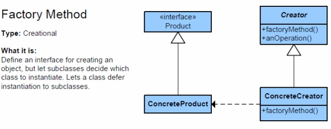
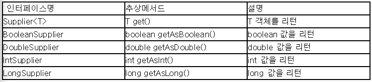

사용하는 자원에 따라 동작이 달라지는 클래스
많은 클래스가 하나 이상의 자원에 의존한다. 한 예로 맞춤법 검사기(SpellChecker)는 dictionary에 의존한다. 다음 두 예는 의존 객체에 대해 잘못 구현한 예이다.
1 | public class SpellChecker { |
코드 5-1 정적 유틸리티를 잘못 사용한 예 - 유연하지 않고 테스트하기 어렵다.
1 | public class SpellChecker { |
코드 5-2 싱글턴을 잘못 사용한 예 - 유연하지 않고 테스트하기 어렵다.
코드 5-1과 5-2에 정의된 사전은 한가지이다. 보통 맞춤법 검사기는 언어별로 다양한 사전을 사용하고 있다는 생각이 든다면 앞의 두 코드가 얼마나 훌륭하지 않은지 알수 있다.
맞춤법 검사기가 여러 사전을 사용할 수 있게 하는 여러가지 방법은 존재할 것이다. 한 예로 dictionary의 final 을 제거하고 해당 객체를 교체하는 메서드를 추가할 수 있다. 아쉽게도 이 방식은 어색하고 오류를 내기 쉬우며 멀티스레드 환경에서는 쓸수 없다.
사용하는 자원에 따라 동작이 달라지는 클래스에는 정적 유틸리티 클래스나 싱글턴 방식이 적합하지 않다.
의존 객체 주입 패턴
클래스가 여러 자원 인스턴스를 지원하며, 클라이언트는 원하는 자원을 사용한다. 이 간단한 조건을 만족하는 패턴이 바로 의존 객체 주입 패턴이다. 자원이 몇개든 의존관계가 어떻든 상관없이 동작을 보장한다.
1 | public class SpellChecker { |
코드 5-3 의존 객체 주입은 유연성과 테스트 용이성을 높여준다.
또한 의존 객체 주입 패턴은 불변을 보장하고, 같은 자원을 사용하는 여러 클라이언트가 의존객체들을 안심하고 공유할 수 있도록 한다. 변경 가능성을 최소화하고 인스턴스 내부 값을 수정할수 없음을 의미한다. 또한 정적 팩터리, 빌더 모두 똑같이 응용가능하다.
팩터리 메서드 패턴(Factory Method Pattern)
이 패턴은 생성자에 자원 팩터리를 넘겨주는 방식이다. 팩터리란 호출할때마다 특정 타입의 인스턴스를 반복해서 만들어주는 객체를 말한다. 다시말해, 어떤 클래스의 인스턴스를 만들지는 서브클래스에서 결정하게 만든다는 것이다. 팩토리 메소드패턴을 이용하면 클래스의 인스턴스를 만드는 일을 서브클래스에게 맡기게 된다.
간단히 과정을 말하자면, 객체를 생성하기 위한 인터페이스를 정의하고, 클래스의 인스턴스 생성은 팩토리 메소드를 통해 생성한다.

팩터리 메서드 패턴의 장점으로는 결합도를 낮춰서 얻을 수 있는 이점들이 있다. 클래스의 변경사항이 생겼을 때, 얼마나 다른 클래스에게도 영향을 줄 것인가를 뜻하는 결합도는, 이 패턴으로 인해 극대화 된다. 팩터리 메서드 패턴은 직접 상용하는 객체를 생성하지 않고, 팩터리 메서드 클래스를 통해 객체를 대신 생성시키고, 그 객체를 반환 받아 사용하기 떄문에 효율적인 코드 제어를 할 수 있다. 또한, 결합도를 낮춰 유지보수가 용이하며 객체의 생성을 한군데에서 제어할 수 있는 장점이 있다.
Supplier 인터페이스

해당 자바8에서 소개한 인터페이스는 팩터리를 표현한 완벽한 예이다. 해당 인터페이스는 인자는 받지않으며 리턴타입만 존재하는 메서드를 갖고있다. 순수함수에서 결과를 바꾸는건 오직 인풋 뿐이다. 그런데 인풋이 없다는건 내부에서 랜덤함수같은것을 쓰는게 아닌이상 항상 같은 것을 리턴하는 메서드라는걸 알 수 있다.
1 | Supplier<String> s = () -> "hello supplier"; |
코드 5-4 Supplier의 사용 예
1 | public class SupplierExample { |
코드 5-5 IntSupplier의 사용 예
Supplier
1 | Mosaic create(Supplier<? extends Tile> tileFactory) { ... } |
코드 5-6 Supplier를 이용한 특정 타입 인스턴스 생성
끝마치며..
의존 객체 주입은 클래스의 유연성, 재사용성, 테스트 용이성을 개선시켜 준다는 점에서 매력적인 방법임에 틀림없다. 하지만 대규모 프로젝트들과 같은 의존성이 천개나 되는 큰 프로젝트에서는 지나친 의존성은 자칫 독이 될 수 있다. 이에 이 책에서는 대거(Dagger), 주스(Guice), 스프링(Spring)과 같은 의존 객체 주입 프레임워크를 사용하기를 권한다. 마지막으로 책 중 해당 챕터의 마지막에 핵심정리 부분을 인용하여 정리한다.
클래스가 내부적으로 하나 이상의 자원에 의존하고, 그 자원이 클래스 동작에 영향을 준다면 싱글턴과 정적 유틸리티 클래스는 사용하지 않는 것이 좋다.
이 자원들을 클래스가 직접 만들게 해서도 안 된다.
대신 필요한 자원을(혹은 그 자원을 만들어주는 팩터리를) 생성자에( 혹은 정적 팩터리나 빌더에) 넘겨주자. 의존 객체 주입이라 하는 이 기법은 클래스의 유연성, 재사용성, 테스트 용이성을 기막히게 개선해준다.